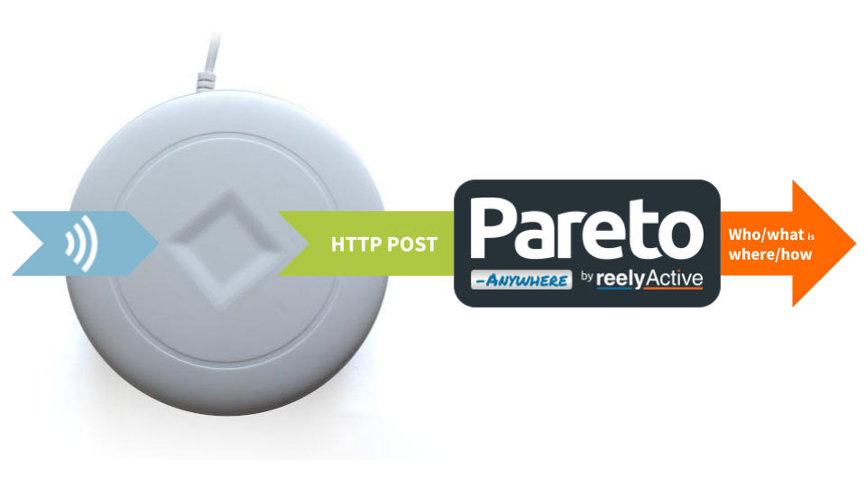

Configure a Minew MG4 Gateway
Our step-by-step guide to configure the gateway to forward data for processing by Pareto Anywhere.
The TL;DR (Too Long; Didn't Read)
Learn how we at reelyActive configure the gateways to enable interoperable IoT solutions
- What will this accomplish?
- The MG4 will forward ambient Bluetooth Low Energy packets to a server running Pareto Anywhere.
- What's Pareto Anywhere?
- Pareto Anywhere is open source IoT middleware that makes sense of who/what is where/how, in any physical space, in real time.
- How long does this take?
- A MG4 can be configured in a few minutes when all prerequisites are in place.
Prerequisites
A Minew MG4 gateway and the GatewayConfig mobile app.
Configure connectivity Step 1 of 3
Configure the WiFi of the MG4 using the GatewayConfig mobile app.
- How to connect?
- The MG4 requires the GatewayConfig mobile app for configuration.
- Internet required?
- The MG4 can operate on both Internet-connected and isolated WiFi networks.
Connect mobile device to target WiFi Part 1
Prepare the mobile device as follows:
- connect the mobile device to the WiFi network intended for use by the MG4 gateway
- enable Location on the mobile device so that this WiFi network can be shared with the MG4
Power the gateway in configuration mode Part 2
Ensure the ON/OFF switch is in the OFF position and then:
- apply power to the gateway by connecting to a USB supply
- press and hold the Reset button
- slide the switch to the ON position
- release the Reset button and observe the blinking blue LED
The MG4 gateway is now in configuration mode.
Complete connectivity setup Part 3
Open the GatewayConfig app on the mobile device and complete the connectivity setup as follows:

1 Select the (+) at the top right of the Device list page to configure a new device.
2 Confirm that the gateway is still in configuration mode (from Part 2) and select Next step.
3 Enter the password for the target WiFi network (from Part 1).
4 Select Next step to transfer the connectivity settings to the gateway.
Observe the connected gateway in the list once the configuration completes.
Keep the GatewayConfig app open to complete the gateway configuration in Step 2 below.
Configure data capture and forwarding Step 2 of 3
Configure the MG4 to forward data to a local server running Pareto Anywhere.
- How is data forwarded?
- The MG4 supports MQTT and HTTP. HTTP POST is natively supported by the barnowl-minew module of Pareto Anywhere.
- Which data format?
- JSON Long. Unlike other Minew gateways, this is the default and sole option.
Configure data forwarding Part 1
Continue the configuration (from Step 1 above) in the GatewayConfig app on the mobile device as follows:

1 Select the target gateway from the list.
2 Select HTTP for data forwarding.
3
Enter the URL of the Pareto Anywhere server
For testing, use http://xxx.xxx.xxx.xxx:3001/minew replacing the x with the IP address of your computer on the WiFi network.
4 Update the Time server to pool.ntp.org or to the NTP server of your choice.
5 Select Configuration to proceed.
6 Select Ok to restart the gateway for the changes to take effect, if required.
7 Optionally rename the gateway to facilitate identification on the network and/or for future configuration.
8 Select Confirm to complete the configuration.
Observe the named gateway in the Device list.
Observe data in Pareto Anywhere Step 3 of 3
Run the Pareto Anywhere open source middleware to observe the forwarded data.
- How to run Pareto Anywhere?
- We provide friendly tutorials to install on a laptop, a Pi, etc.
- Is there a quick and dirty way?
- Yes. Our barnowl-minew package provides a simple means to receive gateway data and log to the console (see below).
Observing data in Pareto Anywhere requires no additional action if an instance based on the pareto-anywhere package is running, or, for quick-and-dirty validation, run barnowl-minew as described below.
If a Pareto Anywhere installation based on the pareto-anywhere package is already present and running on the target computer on the host network, the data forwarded by the gateway should be available in both the web apps and APIs.
-

-
Run Pareto Anywhere on a PC
Install and run Pareto Anywhere on a personal computer to make any physical space context-aware.
-

-
Run Pareto Anywhere on a Raspberry Pi
Install and run Pareto Anywhere on a Pi to make any physical space context-aware.
To quickly validate that data is correctly received on the target computer on the host network, it is possible to run barnowl-minew standalone to listen for HTTP POSTs on port 3001 as follows:
git clone https://github.com/reelyactive/barnowl-minew.git npm install npm start
If the gateway is correctly configured and at least one Bluetooth Low Energy device is advertising in range, raddec data should appear in the console.
Enjoy the real-time data stream
Our cheatsheet details the raddec and dynamb JSON output from the Pareto Anywhere open source middleware.
-

-
Developers Cheatsheet
"Owl" you need to know about Pareto Anywhere's core data structures.


Tutorial prepared with ♥ by jeffyactive.
You can reelyActive's open source efforts directly by contributing code & docs, collectively by sharing across your network, and commercially through our packages.Where to next?
Continue exploring our open architecture and all its applications.
-

-
Directory of Devices
Browse all device configuration tutorials and development guides.
-

-
reelyActive Developers
Browse all developer documentation and tutorials.
-

-
reelyActive
Together let's put things in context.